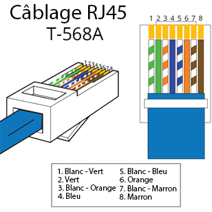
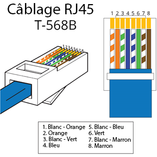

Vous souhaitez :
Un cable réseau étant composé de 2 extrémités il est donc nécessaire d'avoir 2 embouts RJ45
Pour créer un câble RJ45 droit il faut mettre la meme norme de câblage à chaque extrémité (T568A ou T568B) dans ce tutoriel, je vais expliquer les 2.
Pour faire un cable droit respectant la norme T568A :
Prendre une extrémité du câble et la câbler en suivant le schéma minutieusement de la même manière sur les 2 extrémités.
Pour faire un cable droit respectant la norme T568B :
Prendre une extrémité du câble et la câbler en suivant le schéma minutieusement de la même manière sur les 2 extrémités.
Un cable réseau étant composé de 2 extrémités il est donc nécessaire d'avoir 2 embouts RJ45
Pour créer un câble RJ45 croisé il faut mettre une norme de câblage différente à chaque extrémité (T568A et T568B).
Pour faire un cable croisé respectant les normes T568A d'un coté et T568B de l'autre :
Prendre une extrémité du câble et la câbler en suivant ce schéma minutieusement.
Pour faire un cable croisé respectant les normes T568A d'un coté et T568B de l'autre :
Prendre l'autre extrémité du câble et la câbler en suivant ce schéma minutieusement.